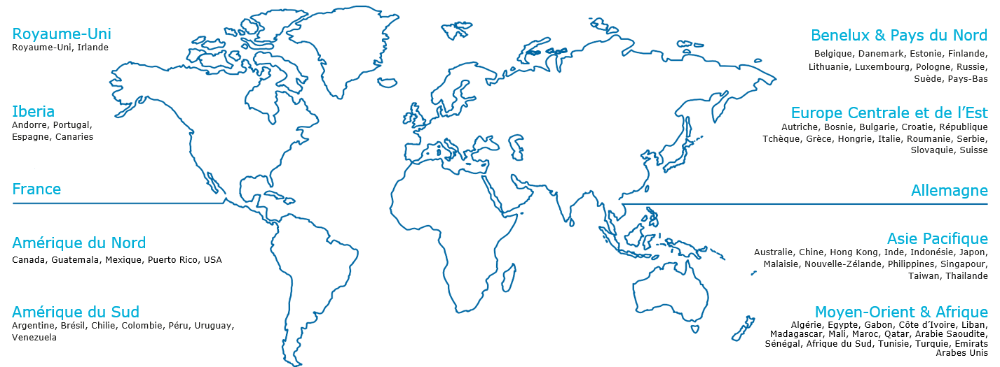

Atos, generator of digital jobs
The Group's total workforce stood at 110,797 employees as of December 31, 2022, an increase of +1.5% compared to 109,135 employees as of December 31, 2021 (+1.7% organically). carried out 29,458 recruitments. 62% of these recruitments were made in offshore and nearshore countries. In 2022, the attrition rate was 21.6%.
Partners and investors
Atos relies on a network of strategic partners to combine their expertise and provide their clients with innovative solutions. Leveraging the capabilities of these industry-leading companies allows them to focus on their clients' activities. Services and solutions that fully and intelligently integrate partner products allow them to support and complement their key skills in order to optimize their productivity.
Atos locations worldwide
Atos, a leading IT services and technology consulting company, has a global presence in more than 70 countries. Each location serves as a center of expertise to develop advanced technological solutions, adapted to local and regional needs. This strategic geographic distribution strengthens Atos' ability to contribute to digital transformation on a global scale.
